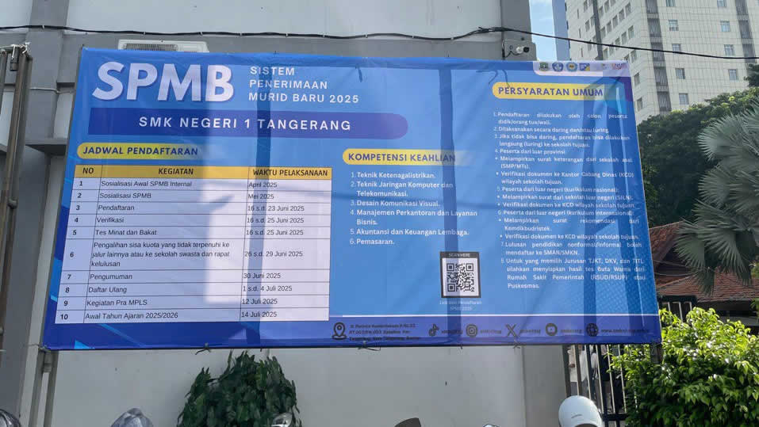

SPMB SMKN 1 TANGERANG 2025/2026 |
|
Tahun ini nama PPDB diubah menjadi SPMB (Seleksi Penerimaan Murid Baru). Pendaftaran SPMB untuk SMA/SMK/SKh yang ada di wilayah provinsi Banten dapat dilakukan di alamat web https://spmb.bantenprov.go.id secara daring (online) sehingga dapat dilakukan dari rumah masing-masing, tidak perlu datang ke sekolah yang dituju. Ada yang menarik pada SPMB, yaitu diikutsertakan sekolah-sekolah swasta gratis. Artinya, calon peserta didik tidak hanya memilih sekolah ngeri, tapi ada pilihan lain yaitu sekolah swasta. Untuk lebih jelasnya silakan buka website https://spmb.bantenprov.go.id
Poin-poin penting yang harus dilakukan calon peserta didik: Antara tanggal 16 sampai 23 Juni 2025, calon peserta didik yang berminat masuk ke SMA/SMK/SKh wajib melakukan pendaftaran secara daring (online) di website spmb.bantenprov.go.id. Khusus untuk yang berminat mendaftar ke SMK, maka wajib mengikuti tahap berikutnya yaitu Tes Minat dan Bakat. Setiap SMK mungkin berbeda penyelenggaraannya. Ada yang dilakukan secara luring (offline) di sekolah yang dituju, ada juga yang dilakukan secara daring (online) Ada yang berupa tes wawancara langsung (tatap muka), ada juga yang berupa tes menggunakan LMS / Google Form. Tanggal pelaksanaan pun berbeda-beda. Ada yang dilakukan setiap hari antara tanggal 23 sampai 25 Juni, ada juga yang dilakukan serentak misalkan satu hari yaitu di tanggal 25 Juni 2025. Untuk lebih jelasnya tentang Tes Minat dan Bakat, silakan kunjungi website atau kanal informasi dari sekolah masing-masing.
Khusus Untuk SMK Negeri 1 Tangerang: Pengumuman Nomor Peserta dan Jadwal Tes: 24 Juni 2025 di website sekolah sekaligus simulasi Tes yang dapat dilakukan dari rumah masing-masing. Unduh aplikasi “Moodle Based Test” dari Google Play Store. Bagi peserta yang hanya mempunyai iOS (Apple) atau hanya mempunyai laptop, silakan hubungi Help Desk. Dari aplikasi “Moodle Based Test” pilih SMK Negeri 1 Tangerang.
Ketik username dan password. Username = NIK. Password = Tanggal lahir (yyyy-mm-dd). Pada login yang pertama kali, anda akan diminta mengganti password. Pilih password baru yang sesuai kriteria: Minimal 8 karakter, ada angka, anda huruf kapital (huruf besar), ada huruf non-kapital (huruf kecil) dan ada simbol. Sila mencoba mengerjakan Quiz “Latihan”. Perhatikan tulisan di belakang nama anda. Misalkan “Mirzanaya Sesi 3 Lab 4” berarti hari Rabu, 25 Juni 2025 harus hadir di jadwal Sesi 3 dan mengerjakan soal di Lab Komputer 4.
|
|
 Kembali ke Beranda. |